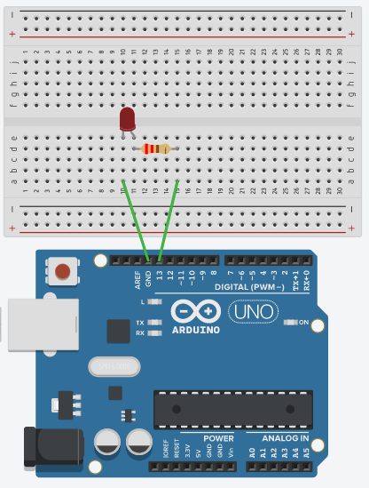
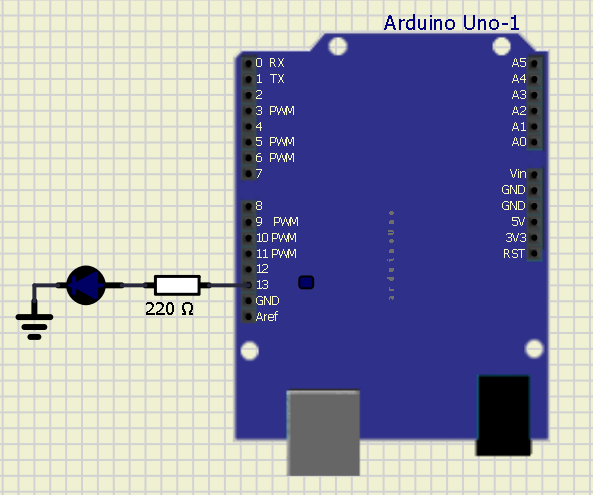

Blink LED
O que esse código faz?¶
Este código de exemplo demonstra como piscar um LED com arduino (blink led).
Circuito protoboard¶

Código¶
int led = 13; //defindo o valor 13 para a variável led
void setup(){
pinMode(led,OUTPUT); //declara led (pino 13 do arduino) como saida (OUTPUT)
}
void loop(){
digitalWrite(led, HIGH); //acende (HIGH) o led
delay(1000); //delay em milisegundos (1 seg)
digitalWrite(led, LOW); //apaga o led (LOW)
delay(1000); //delay em milisegundos
}
Circuito simulador
